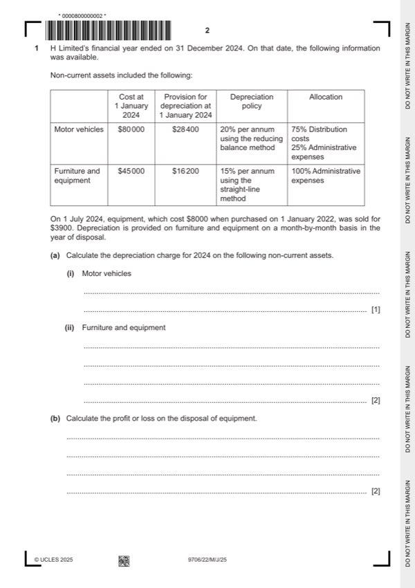

Question 1

Original paper page 2
Part 1(a)(i) — solution
- 20% ($80 000 – $28 400) = $10 320 (1)
Mark points
- 20% ($80 000 – $28 400) = $10 320 (1)
Part 1(a)(ii) — solution
- (15% $37 000 = $5 550) (1) + (15% ½ $8 000 = $600) = $6 150 (1)
Mark points
- (15% $37 000 = $5 550) (1) + (15% ½ $8 000 = $600) = $6 150 (1)
Part 1(b) — solution
- Carrying amount at time of disposal: $8 000 – $3 000 = $5 000 (1)
- Loss on disposal: $5 000 – $3 900 = $1 100 loss (1) OF
Mark points
- Carrying amount at time of disposal: $8 000 – $3 000 = $5 000 (1)
- Loss on disposal: $5 000 – $3 900 = $1 100 loss (1) OF
Part 1(c) — solution
Prepare the statement of profit or loss for the year ended 31 December 2024. 12
H Limited
Statement of profit or loss for the year ended 31 December 2024
$
Revenue 570 000
Cost of sales (288 400)
Gross profit 281 600
Distribution costs W1 (102 140) (4) OF
Administrative expenses W2 (115 790) (5) OF
Profit from operations 63 670
Income / rent received / rent income W3 6 400 (1)
Finance costs (6 000) (1)
Profit before taxation 64 070
Taxation (4 200)
Profit for the year 59 870 (1) OF
W1 Distribution costs:
$
As given 9 800
Carriage outwards 2 700
Marketing costs ($24 240 – (4/5 $8800))_ 17 200 (1)
Sales staff wages and salaries ($62 300 + bonus $2400) 64 700 (1)
Depreciation motor vehicles (75% $10 320) 7 740 (1)
102 140 (1) OF
University Press & Assessment 2025 Page 8 of 17
9706/22 Cambridge International AS & A Level – Mark Scheme May/June 2025
Mark points
- Include the ideas shown in the solution above.
Part 1(c) — solution
- $800 per month 8 months = $6 400 (1)
Mark points
- $800 per month 8 months = $6 400 (1)
Part 1(d) — solution
Prepare the statement of changes in equity for the year ended 31 December 6
2024.
H Limited
Statement of changes in equity for the year ended 31 December 2024
Share Share Revaluation Retained Total
Capital Premium Reserve Earnings
$ $ $ $ $
Balances at 525 000 40 000 95 000 112 700 772 700
Mark points
- Include the ideas shown in the solution above.
Part 1 — solution
Answer: 2024
January (1)fb
2024
Share 200 000 80 000 280 000
issue W1 (1)fb
Dividends (22 500) (22 500)
paid (1)
Revaluatio (95 000) (55 000) (150 000)
n of (1)fb
property
Profit for 59 870 59 870
the year (1)OF
Balances at 725 000 120 000 – 95 070 940 070 (1) OF
Mark points
- Correct result: 2024
Part 1(e) — solution
- Option A = rights issue = max 4
- Option B = debentures = max 4
Mark points
- Option A = rights issue = max 4
- Option B = debentures = max 4
Part 1 — solution
Raif 80 (1) For
both
Rafiq 80
Mark points
- Include the ideas shown in the solution above.